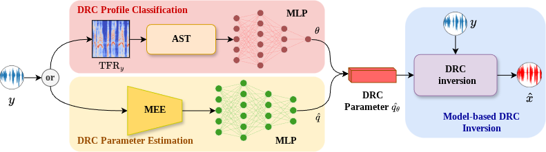
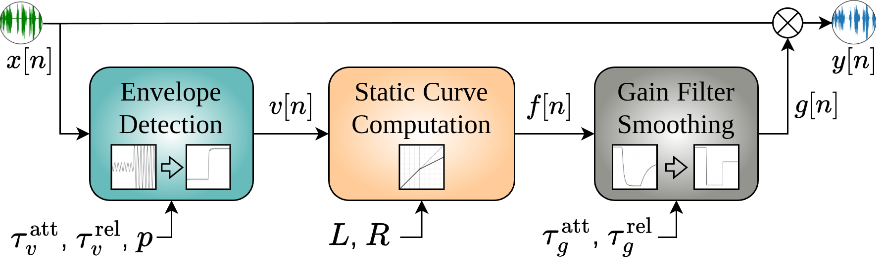
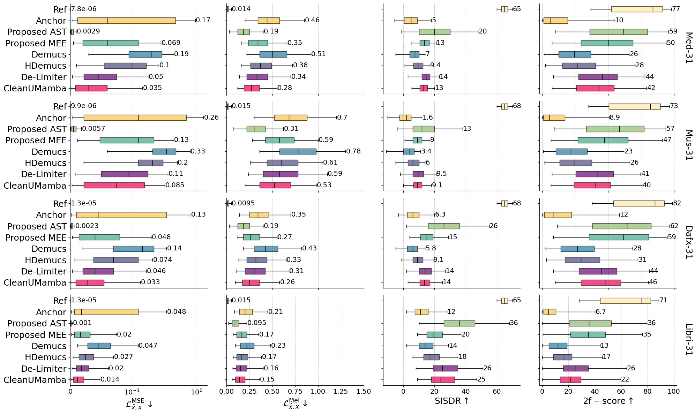
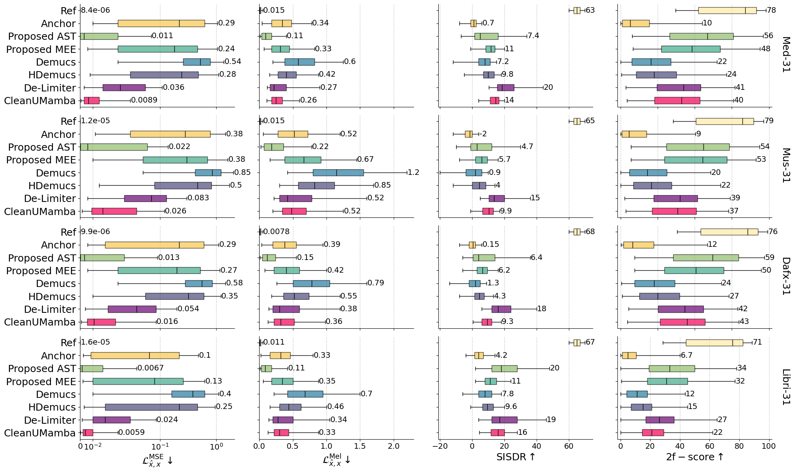

Hybrid Model-Driven Inversion of Audio Dynamic Range Compression and Expansion
Abstract
Dynamic Range Control (DRC) is a widely used audio effect that adjusts signal dynamics for applications in music production, broadcasting, and speech processing. Inverting DRC is of broad importance in restoring the original dynamics, enabling remixing, and enhancing the overall audio quality. Existing DRC inversion methods either overlook key parameters or rely on precise parameter values, which can be challenging to estimate accurately. To address this limitation, we make two main contributions. First, building on a widely used model-based compression inversion framework, we derive and validate an analytical inversion method for dynamic range expansion, enabling a unified treatment of both compression and expansion effects. Second, we propose a hybrid parameter estimation framework that combines classification and regression strategies: classification identifies a profile from a predefined library, while regression estimates a fixed DRC parameter vector within the parameter domain considered during training. The estimated parameters are used for model-based signal recovery from its compressed or expanded version. Experiments on music and speech datasets show that the proposed methods outperform the evaluated neural baselines under the tested conditions.
Proposed Method
The framework first estimates the DRC parameters and then applies the corresponding analytical inverse. The DRC mode and estimation pathway are selected before inference: AST identifies a profile from a predefined library, while MEE estimates a continuous six-parameter vector within the parameter domain considered during training.

Proposed hybrid DRC inversion framework. The user selects the DRC mode and the parameter-estimation pathway before inference.

Feedforward DRC model shared by compression and expansion.
DRC Profiles
We construct two dataset families from four corpora: MedleyDB, MUSDB18-HQ, DAFX, and LibriSpeech. The 6-profile datasets contain five predefined DRC profiles plus the neutral identity case. The 31-profile datasets contain 30 sampled profiles plus the neutral identity case. Compressors and expanders share the same parameters except for the threshold L. All profiles use an RMS detector (p = 2).
| Parameter | Description | 6-profile datasets | 31-profile range | ||||
|---|---|---|---|---|---|---|---|
| A | B | C | D | E | |||
| Lc (dBFS) | Threshold (compressor) | -32 | -19.9 | -24.4 | -26.3 | -38.0 | [-60, -20] |
| Le (dBFS) | Threshold (expander) | -12 | -19.9 | -24.4 | -26.3 | -18.0 | [-40, -10] |
| R (dBin:dBout) | Ratio | 3.0 | 1.8 | 3.2 | 7.3 | 4.9 | [2, 15] |
| τvatt (ms) | Envelope attack | 5 | [5, 500] | ||||
| τvrel (ms) | Envelope release | 5 | [25, 2000] | ||||
| τgatt (ms) | Gain attack | 13.0 | 11.0 | 5.8 | 9.0 | 3.1 | [5, 500] |
| τgrel (ms) | Gain release | 435 | 49 | 112 | 705 | 257 | [25, 2000] |
| p (1 or 2) | Detector type | 2 | 2 | ||||
Detailed Parameters of the 30 DRC Profiles
These profiles are used to construct the 31-profile compressed-signal datasets together with the neutral identity case. All profiles use an RMS detector (p = 2). The corresponding expansion profiles share the ratio and time constants; their expansion thresholds are defined separately within the range reported above.
| Profile | L (dBFS) | R | τvatt (ms) | τvrel (ms) | τgatt (ms) | τgrel (ms) |
|---|---|---|---|---|---|---|
| 1 | -30.6 | 2.3 | 73.9 | 20.3 | 451.5 | 1153.6 |
| 2 | -55.9 | 12.1 | 25.4 | 50.9 | 54.1 | 1274.5 |
| 3 | -55.1 | 13.4 | 43.3 | 76.4 | 354.6 | 468.4 |
| 4 | -39.6 | 13.1 | 66.2 | 10.1 | 325.5 | 1435.7 |
| 5 | -31.4 | 12.3 | 99.4 | 91.7 | 160.7 | 790.8 |
| 6 | -60.0 | 15.0 | 130.0 | 89.2 | 393.4 | 1758.2 |
| 7 | -47.8 | 5.4 | 50.9 | 84.1 | 403.1 | 1677.6 |
| 8 | -46.9 | 4.9 | 48.4 | 66.2 | 257.7 | 1516.3 |
| 9 | -45.3 | 2.5 | 89.2 | 114.7 | 344.9 | 1234.2 |
| 10 | -26.5 | 10.8 | 114.7 | 68.8 | 209.2 | 145.9 |
| 11 | -43.7 | 8.4 | 35.6 | 107.0 | 432.1 | 750.5 |
| 12 | -20.8 | 6.5 | 84.1 | 101.9 | 500.0 | 347.4 |
| 13 | -22.4 | 11.3 | 124.9 | 63.7 | 364.3 | 831.1 |
| 14 | -40.4 | 10.0 | 112.1 | 99.4 | 374.0 | 1355.1 |
| 15 | -52.7 | 4.4 | 104.5 | 35.6 | 199.5 | 1919.4 |
| 16 | -51.8 | 2.0 | 117.2 | 117.2 | 277.0 | 549.0 |
| 17 | -38.0 | 5.2 | 5.0 | 40.7 | 296.4 | 1717.9 |
| 18 | -51.0 | 3.3 | 28.0 | 127.4 | 170.4 | 669.9 |
| 19 | -29.8 | 9.2 | 33.1 | 56.0 | 131.6 | 1959.7 |
| 20 | -29.0 | 11.8 | 45.8 | 81.5 | 412.8 | 992.3 |
| 21 | -28.2 | 5.7 | 10.1 | 17.8 | 34.7 | 428.1 |
| 22 | -50.2 | 12.6 | 22.9 | 122.3 | 83.2 | 1395.4 |
| 23 | -23.3 | 12.9 | 12.7 | 7.6 | 112.2 | 25.0 |
| 24 | -44.5 | 7.8 | 15.2 | 86.6 | 306.1 | 1838.8 |
| 25 | -46.1 | 11.0 | 122.3 | 12.7 | 189.8 | 1113.3 |
| 26 | -56.7 | 2.8 | 94.3 | 28.0 | 102.6 | 186.2 |
| 27 | -24.9 | 10.5 | 38.2 | 43.3 | 335.2 | 226.5 |
| 28 | -48.6 | 8.9 | 107.0 | 104.5 | 25.0 | 1798.5 |
| 29 | -49.4 | 10.2 | 127.4 | 71.3 | 92.9 | 508.7 |
| 30 | -24.1 | 14.2 | 81.5 | 58.6 | 180.1 | 871.4 |
DRC Parameter Estimation Results
Profile Classification
We compare AST with DyMN for identifying a DRC profile from a predefined library. AST achieves higher classification accuracy in every evaluated dataset, profile-set size, and DRC mode.
| Mode | Model | 6-profile datasets | 31-profile datasets | ||||||
|---|---|---|---|---|---|---|---|---|---|
| Med | Mus | DAFX | Libri | Med | Mus | DAFX | Libri | ||
| Compression | AST | 0.995 | 0.993 | 0.999 | 0.999 | 0.897 | 0.885 | 0.946 | 0.973 |
| DyMN | 0.956 | 0.976 | 0.984 | 0.948 | 0.823 | 0.835 | 0.931 | 0.960 | |
| Expansion | AST | 0.991 | 0.987 | 0.998 | 0.999 | 0.894 | 0.881 | 0.942 | 0.970 |
| DyMN | 0.951 | 0.963 | 0.979 | 0.993 | 0.819 | 0.827 | 0.915 | 0.956 | |
Classification accuracy (↑). Best result in each condition is shown in bold.
Continuous Parameter Regression
We compare MEE with AST, TFE, and DyMN using the same normalized six-parameter target. MEE obtains the lowest normalized parameter MSE in every evaluated condition. Errors are generally larger for the 31-profile datasets and for expansion.
| Mode | Model | 6-profile datasets | 31-profile datasets | ||||||
|---|---|---|---|---|---|---|---|---|---|
| Med | Mus | DAFX | Libri | Med | Mus | DAFX | Libri | ||
| Compression | AST | 0.037 | 0.042 | 0.032 | 0.028 | 0.077 | 0.083 | 0.074 | 0.070 |
| MEE | 0.007 | 0.010 | 0.006 | 0.003 | 0.031 | 0.039 | 0.025 | 0.012 | |
| TFE | 0.055 | 0.056 | 0.048 | 0.046 | 0.058 | 0.058 | 0.054 | 0.052 | |
| DyMN | 0.021 | 0.044 | 0.011 | 0.023 | 0.042 | 0.073 | 0.031 | 0.039 | |
| Expansion | AST | 0.044 | 0.040 | 0.033 | 0.028 | 0.080 | 0.078 | 0.075 | 0.071 |
| MEE | 0.009 | 0.013 | 0.008 | 0.004 | 0.040 | 0.051 | 0.033 | 0.016 | |
| TFE | 0.072 | 0.073 | 0.063 | 0.060 | 0.075 | 0.076 | 0.070 | 0.068 | |
| DyMN | 0.067 | 0.038 | 0.025 | 0.013 | 0.072 | 0.063 | 0.048 | 0.024 | |
Normalized parameter MSE \(\mathcal{L}^{\mathrm{MSE}}_{\hat{q},q}\) (↓). Best result in each condition is shown in bold. TFE uses a 64 × 431 STFT input.
DRC Inversion Results

Compression inversion results. Box-plot comparison on the 6-profile and 31-profile datasets across four audio corpora and four metrics.

Expansion inversion results. Box-plot comparison on the 6-profile and 31-profile datasets across four audio corpora and four metrics.
DRC Illustration
Waveform examples illustrate the forward DRC process and the subsequent model-based reconstruction. Here, x is the original signal, y is the compressed or expanded signal, and x̂ is the reconstructed signal.
Compression

Original signal x and compressed signal y.

Original signal x and reconstruction x̂ after compression inversion.
Expansion

Original signal x and expanded signal y.

Original signal x and reconstruction x̂ after expansion inversion.
Listening Examples
We provide several audio examples to compare different inversion methods. The original audio is a 5-second chunk extracted from the MedleyDB dataset. The DRC parameter order is \(q=[L,R,\tau_v^{\mathrm{att}},\tau_v^{\mathrm{rel}}, \tau_g^{\mathrm{att}},\tau_g^{\mathrm{rel}},p]\), with time constants in milliseconds.
| Model | Audio | \( \mathcal{L}^{\text{MSE}}_{\hat{x},x} \downarrow \) | \( \mathcal{L}^{\text{Mel}}_{\hat{x},x} \downarrow \) | SISDR \( \uparrow \) | 2f-score \( \uparrow \) |
|---|---|---|---|---|---|
| Original | \ | \ | \ | \ | |
| Compression, with the compressor: [-32, 3, 5, 5, 13, 435, 2] | |||||
| Compressed | 0.0046 | 1.18 | 9.83 | 28.38 | |
| Ref | \(7.34 \times 10^{-7} \) | 0.0097 | 71.21 | 97.00 | |
| Anchor | 0.64 | 3.07 | 0.44 | 8.06 | |
| AST | \( 3.27 \times 10^{-6} \) | 0.019 | 41.19 | 89.20 | |
| MEE | 0.027 | 0.57 | 14.29 | 39.96 | |
| Demucs | 0.18 | 0.73 | 10.18 | 22.50 | |
| HDemucs | 0.026 | 0.49 | 18.72 | 45.78 | |
| De-Limiter | 0.0035 | 0.077 | 29.76 | 53.35 | |
| CleanUMamba | 0.0011 | 0.036 | 34.29 | 57.10 | |
| Expansion, with the expander: [-26.3, 7.3, 5, 5, 13, 435, 2] | |||||
| Expanded | 0.0051 | 1.08 | 9.30 | 23.76 | |
| Ref | \(6.41 \times 10^{-7} \) | 0.0027 | 71.68 | 95.80 | |
| Anchor | 0.011 | 0.52 | 8.74 | 21.11 | |
| AST | 0.00012 | 0.0081 | 35.96 | 62.06 | |
| MEE | 0.015 | 0.035 | 23.78 | 50.09 | |
| Demucs | 0.56 | 0.70 | 6.56 | 20.13 | |
| HDemucs | 0.24 | 0.33 | 13.95 | 43.62 | |
| De-Limiter | 0.0024 | 0.69 | 68.62 | 39.56 | |
| CleanUMamba | 0.00035 | 0.77 | 16.38 | 32.38 | |